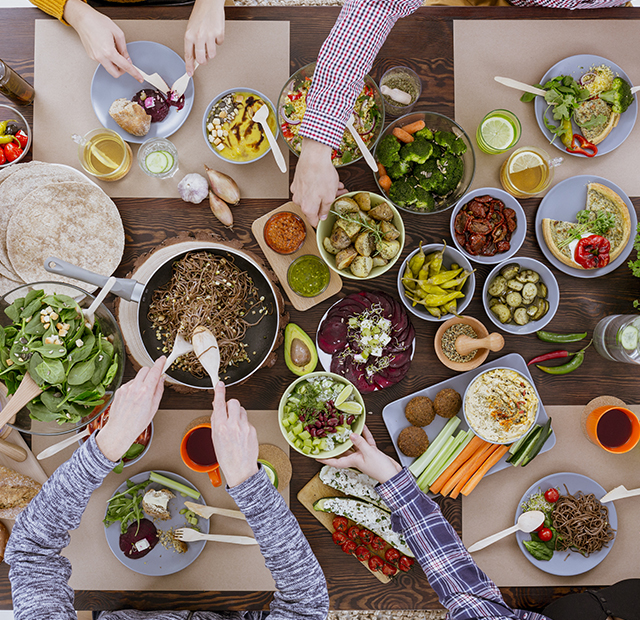
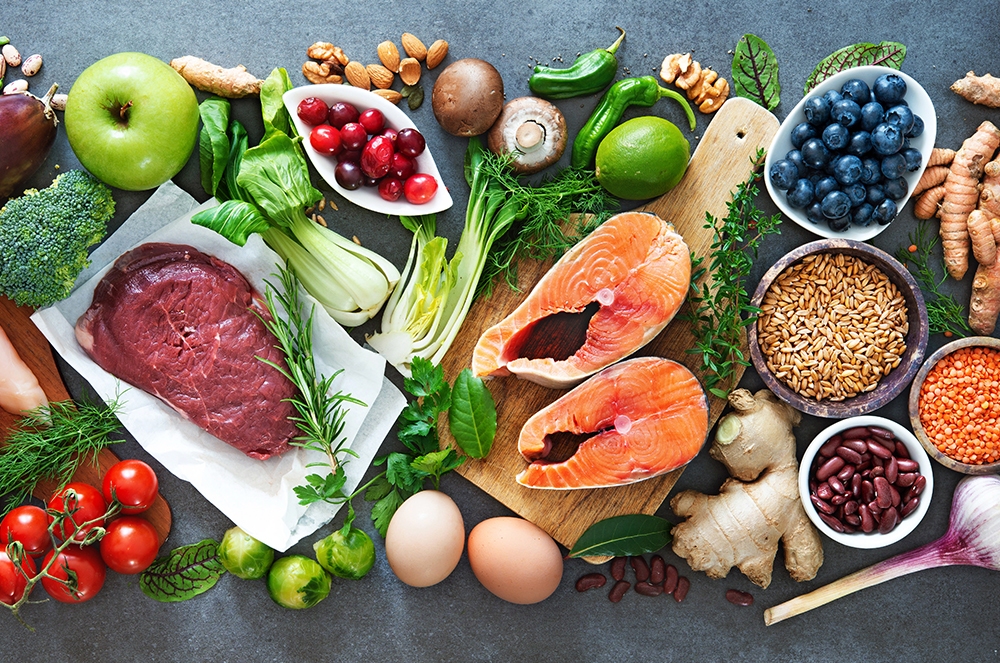
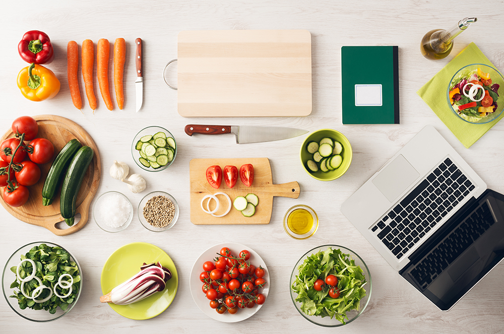

와 제 롤모델이 잡스에요!!! 아이폰 첫 출시되고 나서부터 계속 아이폰 쓰고 있는데 잡스가 너무 그리워요ㅠㅠ 지금은 돈만 벌려고 하는 것 같아서 디자인 발전도 없고ㅠㅠ와 제 롤모델이 잡스에요!!! 아이폰 첫 출시되고 나서부터 계속 아이폰 쓰고 있는데 잡스가 너무 그리워요ㅠㅠ 지금은 돈만 벌려고 하는 것 같아서 디자인 발전도 없고ㅠㅠ와 제 롤모델이 잡스에요!!! 아이폰 첫 출시되고 나서부터 계속 아이폰 쓰고 있는데 잡스가 너무 그리워요ㅠㅠ 지금은 돈만 벌려고 하는 것 같아서 디자인 발전도 없고ㅠㅠ와 제 롤모델이 잡스에요!!! 아이폰 첫 출시되고 나서부터 계속 아이폰 쓰고 있는데 잡스가 너무 그리워요ㅠㅠ 지금은 돈만 벌려고 하는 것 같아서 디자인 발전도 없고ㅠㅠ와 제 롤모델이 잡스에요!!! 아이폰 첫 출시되고 나서부터 계속 아이폰 쓰고 있는데 잡스가 너무 그리워요ㅠㅠ 지금은 돈만 벌려고 하는 것 같아서 디자인 발전도 없고ㅠㅠ
Cultural Odyssey
The Food Trends Set to Shape 2019
The Food Trends Set to Shape 2019


By Tim Alper(Journalist)
January 1 is typically ushered in with feasts and tasty festive treats. But what happens next, when the firework smoke clears, and a brand new year awaits? Many foodies are already feeling the need to begin on a new, responsible culinary path in 2019. So, what trends will dominate the year ahead?
Well, for a start, per a major American retailer, this may be the year when two of the biggest diet trends of recent years converge: the paleo diet and veganism.
Paleo dieters aim to recreate the eating patterns of our hunter-gatherer ancestors, eating lean meat and vegetables people used to forage for, rather than farm.
Vegans, meanwhile, abstain not only from meat, but also from all animal products. While the two diets seem at first irreconcilable, a new generation of so-called “pegans” are attempting to combine the two: with recipes including sliced avocado, baked sweet potatoes and breakfast shakes made with almonds and coconut butter.
For those who prefer to include some animal protein in their diets, experts are claiming that modern carnivores will prize sustainability above all else in 2019. You can also expect grocery stores to stock more “wild-caught” fish and more “grass-fed” red meat.
Bountiful Breakthroughs
Scientific innovations, too, are gathering pace. The race is on to find sustainable meat sources or substitutes that taste just like the real thing. Lab-grown “motherless meat” experiments are now at an advanced stage, and commercialization could begin in earnest this year.
Researchers are also looking at potentially using insect protein as a substitute for fish and meat. Insects can be raised on sustainable, environment-friendly plant-based diets. Although insect dishes are nothing new in many countries, few major companies have ever considered globalizing insect-based food products. However, insects like crickets contain around 60% protein, and are high in vitamins, calcium, iron and amino acids. And while farmers need 380l of water for every 6g of beef they produce, the same amount of water can be used to produce 12 times as much cricket protein – a fact that has already caught the eye of both the EU and the UN.

And with blockchain technology-powered platforms, now being pioneered by major American hypermarkets, Chinese wine importers and Pacific Ocean tuna fishing companies, customers, producers, suppliers and chefs can trace ingredients through every step of the supply chain – helping fight “fake” food, provide sustainability and ensure claims that items are “organic,” “cage-free” or “free-range” are substantiated.
Home Cooking
Away from all the high-tech wonders 2019 has in store for our palettes and plates, the year ahead will likely see us spend more time in our kitchens.
According to a recent survey of millennials, adults are now spending at least four nights a week at home. Hit TV and internet cooking shows inspire budding cooks to try new things, while fast-expanding web-based ecommerce platforms are globalizing hard-to-find niche ingredients. As such, 2019 will offer home chefs more chances than ever to customize and fine-tune their recipes.

Diners in countries all over the world are now acutely aware of the need to reduce food waste. British Environment minister Michael Gove, for example, said at the end of 2018 that he wanted the government to help “end the environmental, economic, and moral scandal of food waste.” The socially conscious cooks of 2019 know that such initiatives must begin at home – with measures that include finding creative ways to give leftovers a new lease of life. Waste-reducing (and money-saving) recipes like pilafs, stir-frys and Spanish omelets, all making creative use of leftover vegetables, are likely to be a hit in 2019.
No matter whether you are a tech-loving science-mad gastronome, a follower of new diet fads or a frugal kitchen trailblazer, 2019 is bound to be a delicious journey of discovery – so bon appétit to all!


By Tim Alper(Journalist)
Tim Alper is a British journalist who has lived in Seoul for 11 years. He has contributed to publications such as The Guardian, The Jewish Chronicle, Joongang Ilbo, Weekly Chosun and Korean Air’s Morning Calm. He is also the author of the book Bananas & Couscous and the co-author of Have Fork, Will Travel.
-
Great
322
-
Like
322
-
Sad
322
-
So-so
322
-
Angry
322